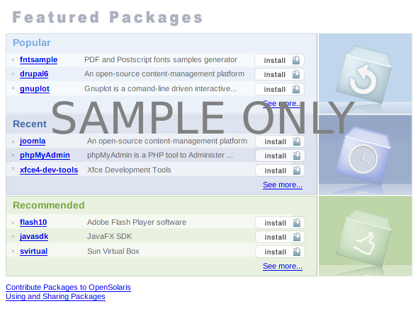

|  | ||
|---|---|---|
|
OpenSolaris의 자세한 내용을 얻을 수 있는 온라인 자원 >> 새로운 OpenSolaris 기능>> OpenSolaris 지원 >> OpenSolaris 저장소 |
시스템 사용자 정의 방법 및 OpenSolaris에 대한 개발 방법 >> 시스템 사용자 정의>> OpenSolaris에 대한 개발 |
최신 뉴스 읽기 및 OpenSolaris 커뮤니티에 참여 >> OpenSolaris Ignite 구독>> 모든 Ignite 기간호 보기 OpenSolaris 포럼 가입 |